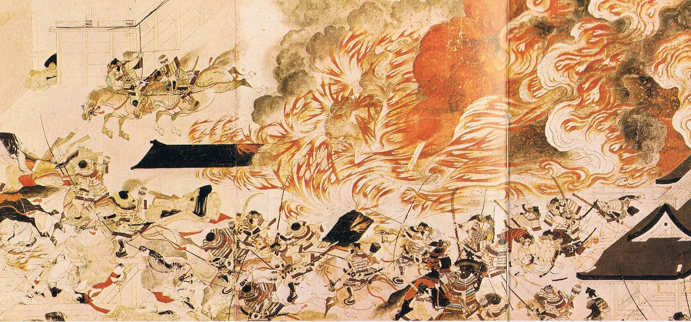

Script 00001EC0
 video: 山桜夜.wmv
video: 山桜夜.wmvLong ago, there were those who fled to this land.
This paradise was named Arata.

Those enchanted by the fruit of Eden in this land joined the ranks of history,
and vanish―

"There is someone I want to protect.
Even I, who am of no use to anyone, have a way to protect them."


"See, if you boil it properly, it turns red.
Some things only become visible once they've been through the fire."


"Haruka, Natsumi-chan, Goto-chan...
I'm asking just to be sure. Are you really going to Arata?"
"I'm definitely going! There's something only I can do, so I'm definitely going!"
"I'm going too!"
"No way I could go home and leave these guys behind either!"
"I'm definitely going! There's something only I can do, so I'm definitely going!"
"I'm going too!"
"No way I could go home and leave these guys behind either!"
video: eden3.wmv
This is...
Shigatsu Youka...